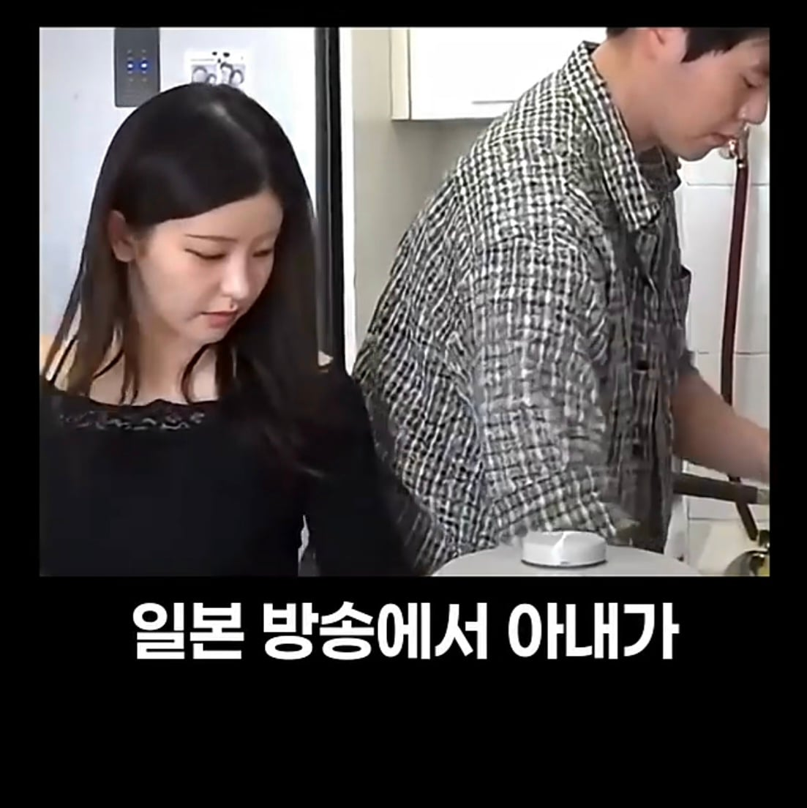
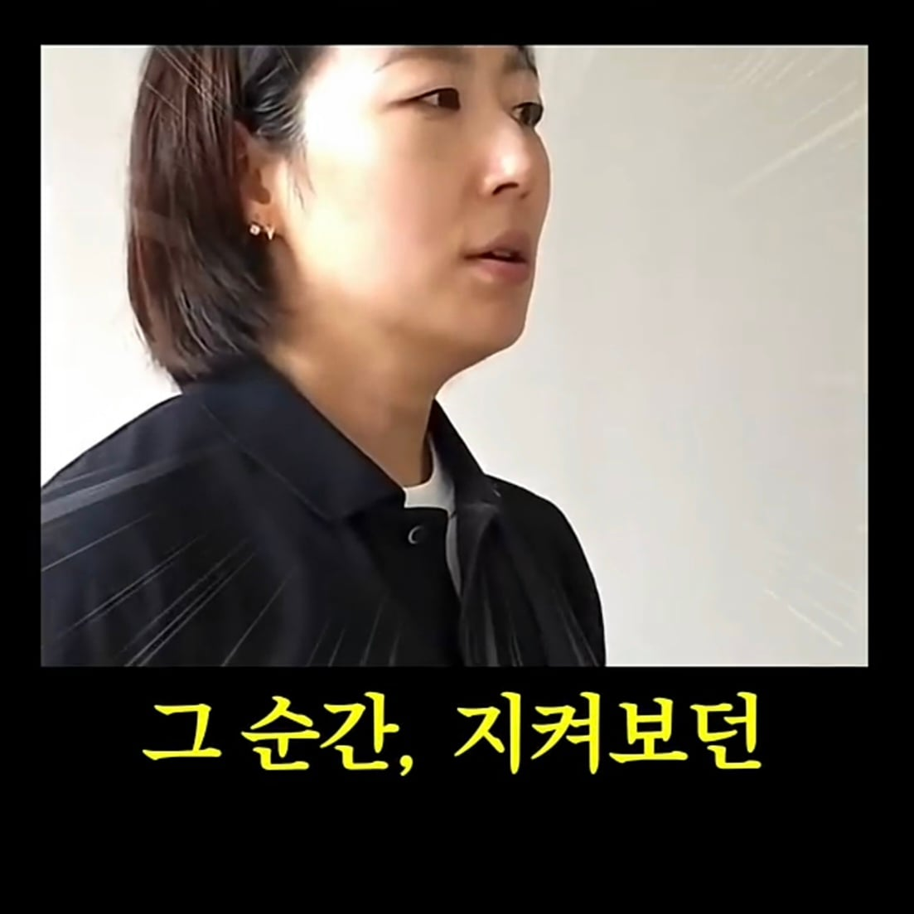
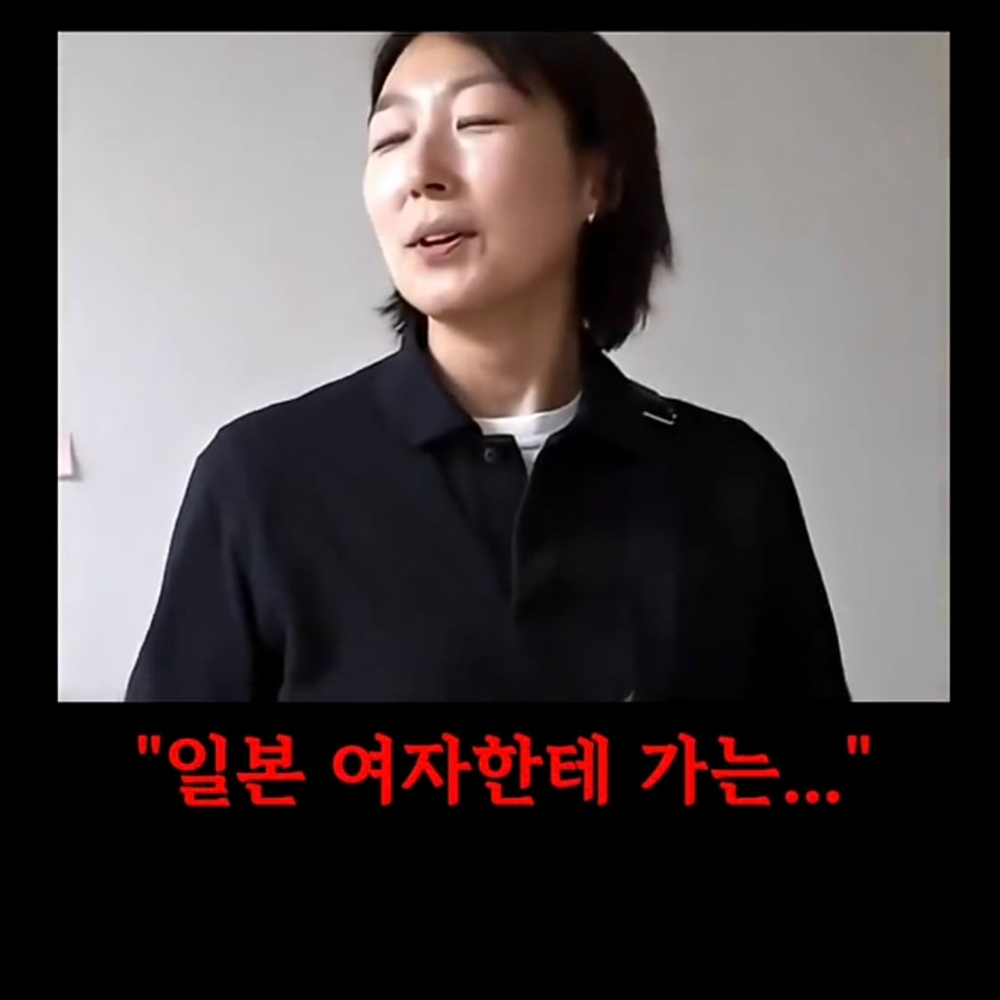

한국 여자들이 한국 남자들을 집안일 하게끔 노력해서 가르쳐놨더니
일본 여자한테 잘해서 어이가없다고 함
많이 억울한 상황



한국 여자들이 한국 남자들을 집안일 하게끔 노력해서 가르쳐놨더니
일본 여자한테 잘해서 어이가없다고 함
많이 억울한 상황
통역사가 남자 어머니야? 진짜 자기랑 전혀 상관없는 별 쓸데없는 헛소리를 배설하네.
일본여자한테 가는 이유를 정확히 알려주네 ㅋㅋㅋㅋ
아 얼굴 나왔지 ㅋㅋ
니들이 지금보다 조금만 상냥했어봐라ㅋㅋ
적당히 쳐 하셨어야지 ㅎㅎ
ㅋㅋㅋㅋㅋㅋㅋㅋㅋㅋ생각이 기발하네
전부 연출이지
헤이헤이헤이! 얼굴노출 착한말만!
가르..쳐?